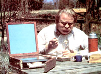
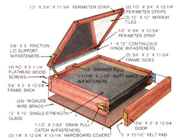

You can let the sun heat your noontime meal . . . while you go about your work or play.
Brown bagging it at lunchtime is a great way to save your pennies . . . but the monotony of eating the same old salami every midday can eventually take its toll on your taste buds. If you'd like to broaden your menu, yet still relish the flavor-and price-of a variety of home-prepared lunches, this "vest-pocket" solar cooker might be the perfect solution!
Though sun-powered ovens are certainly nothing new, Dennis Burkholder's compact model (it's about the size of a briefcase) is unusually convenient to carry and use. It's large enough to heat four sandwiches, a pair of TV dinners, or a shallow casserole, but small enough to be built quickly and inexpensively, without concern over insulation or fancy reflective surfaces. Furthermore, it's also a lunch box, since the handle and latch fasteners make it portable.
If you study the photo and illustration, you'll see that the briefcase cooker is simply a container with an adjustable hinged lid that incorporates a mirrored inner surface. When that reflective panel is angled correctly, the sun's rays bounce off it and are directed onto a square sheet of single-strength glass set into a groove at the upper edge of the box. Just below that glazing, a second mirror-this one reversed so its black rear surface is exposed-is similarly mounted to act as an absorber. Finally, a third reflector is fixed, shiny side up, about 1-1/2" below the absorber plate and is protected on its lower face by a sheet of 1/4" hardboard, which serves as the bottom of the box. The front side of the frame is hinged, latched, and sealed with felt to provide a handy access door.
To make your own portable solar oven, you'll need a strip of 1 X 4 no less than 49" long, two pieces of 1/4" hardboard measuring 12-3/4" X 13-1/4", three 12" X 12" mirrored wall tiles, a sheet of glass with the same dimensions, a 1" X 12" continuous hinge, a 1-11/16" X 2-1/2" butt hinge, a 1-1/2" X 2-3/4" draw pull catch, a 5/8" X 5" friction lid support, a 5" drawer pull, four No. 8 X 1-1/4" flathead wood screws, about two dozen 18gauge wire brads, and a 3" X 12-1/2" piece of felt.
Start by ripping a 1/2" strip off one edge of your 1 X 4 with a table saw, then cut a 1/8" X 3/8" dado into the 1/2" face of that piece. Trim a 36-1/4" section from the 3"-wide leftover board, and cut three more equally sized grooves into it, spacing them so the end kerfs are 1/4" from the edges and the middle channel is 1-1/2" from one of those. (If you're partial to casseroles, hoagies, or deep-dish meals, you can increase this distance to 2".)
Next, cut the triple-dadoed board into one 12-3/4" and two 11-3/4" pieces, then butt the two shorter walls against the longer one-with the grooves aligned-and fasten them together with countersunk flathead wood screws, making sure not to penetrate the dadoes. Tack the open-sided frame to one of the hardboard pieces so the rear surface is flush with the panel edge, again taking care with the placement of the fasteners. Finish the frame by gluing the felt to the ungrooved 3" X 12-3/4" board and attaching it to the front of the box with the butt hinge and the draw pull catch (you may need to trim the strike so it fits on the door edge).
To make the lid, cut the 1/2" X 3/4" X 49" grooved strip into an 11-3/4", a 12-3/4",and two 12-1/4" pieces, then set a mirror tile into the strips' sockets and tack the other hardboard panel over the perimeter, opposite the reflector, to secure it, checking to see that this cover overhangs the shortest strip by 1/4".
Finish up by fastening the continuous hinge to the rear of the frame and the longest lid perimeter strip, and attaching the friction lid support to one side of the box and the handle to the rear. Slip the surface glass and the two remaining mirror tiles into their respective slots as described earlier, and you'll soon be cooking.
Strictly speaking, this solar cooker wasn't designed as an oven, meaning that it won't achieve temperatures much over 230°F. But the slow, even heat that it does provide makes it ideal for warming precooked dishes, grilling sandwiches, and cooking things like hot dogs and prepared pot pies, as long as the lid is aimed properly and the box is reoriented every hour or so to keep up with the moving sun.
Naturally, the degree of success you have with your warmer will depend upon the locale, the ambient temperature, and the cloud cover. But to give you a sampling of our experiences, we brought an 8-3/4-ounce turkey TV dinner from a hard freeze to a simmer in just shy of four hours on a clear, windy, 50° morning, and made a melted cheese sandwich in about 15 minutes on a mild, partly cloudy day!
EDITOR'S NOTE: Other designs for solar cookers were featured in MOTHER NOS. 26, 45, and 50. For information on ordering back issues, turn to page 108.
|
 |
 |
|